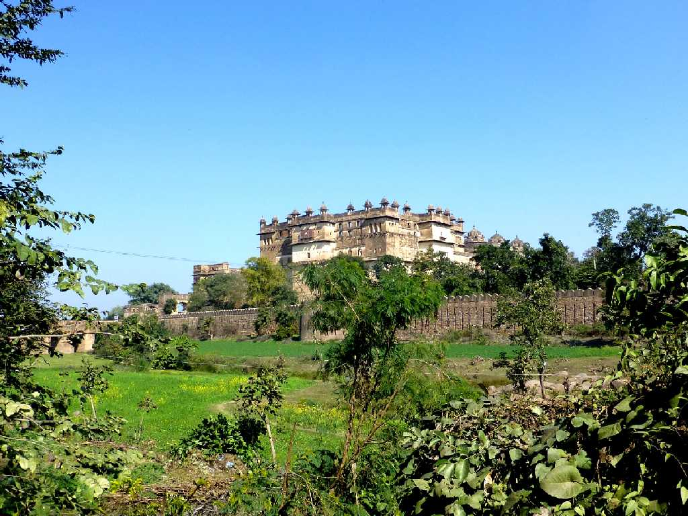
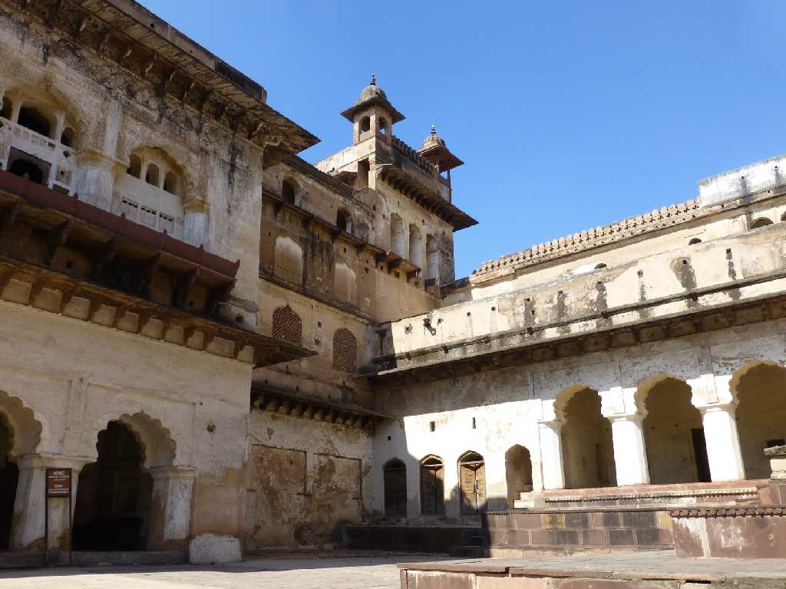
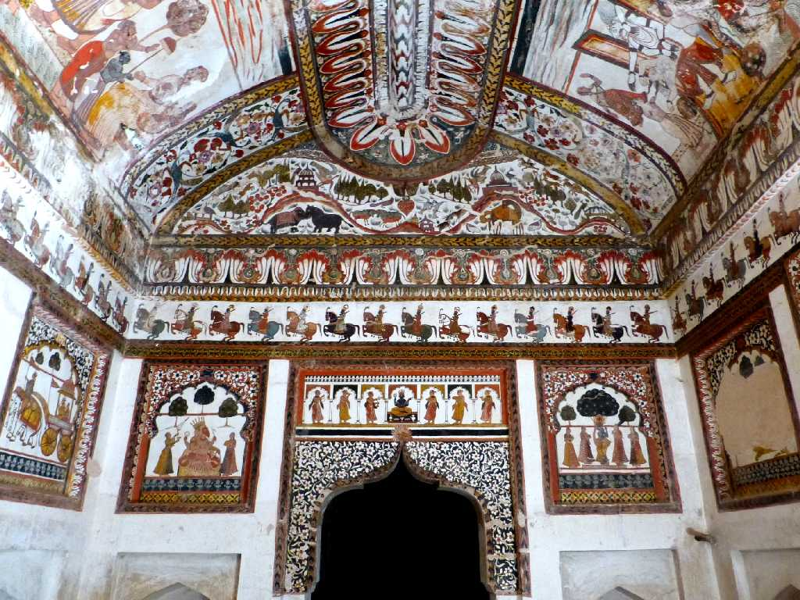
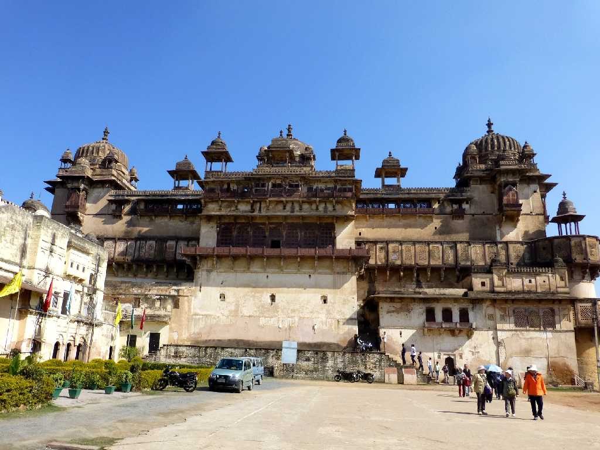
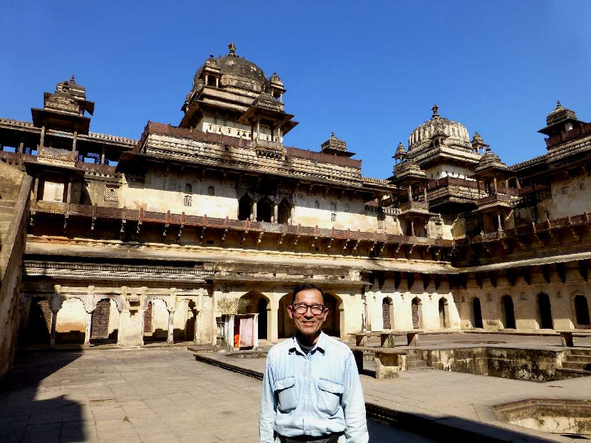
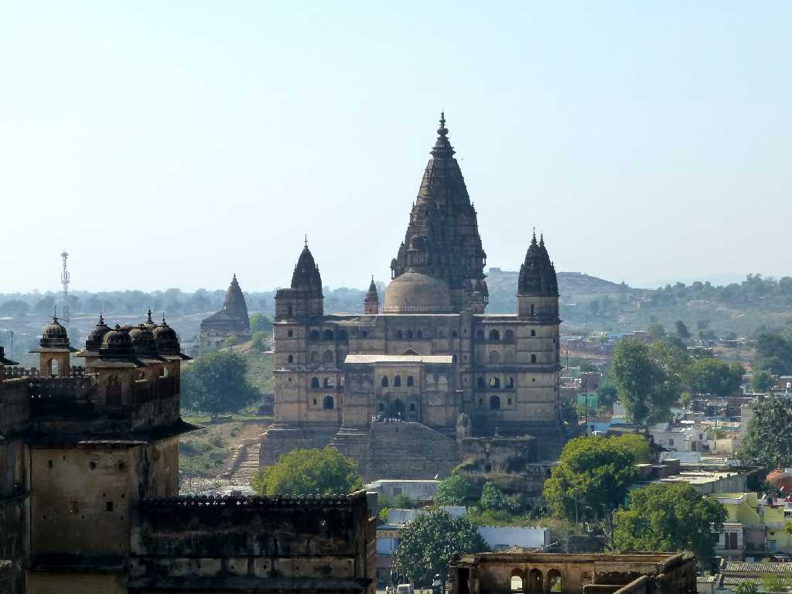

Raja Mahal Orchha Fort Orchha
１６世紀から１８世紀に栄えたブンデラ王国のお城で１５０１年に創られたラジャマハル

Raja Mahal Orchha Fort

Raja Mahal Orchha Fort

Jahangir Mahal Orchha Fort
ジャハーンギルマハルはムガル帝国のジャハーンギル帝を迎えるために創られたお城

January 30 2015 Jahangir Mahal Orchha Fort

View Chaturbhuj Mandir from Jahangir Mahal
１７世紀に創られたクルシュナ神を祀ったヒンドゥ教のチャトルブジャ寺院